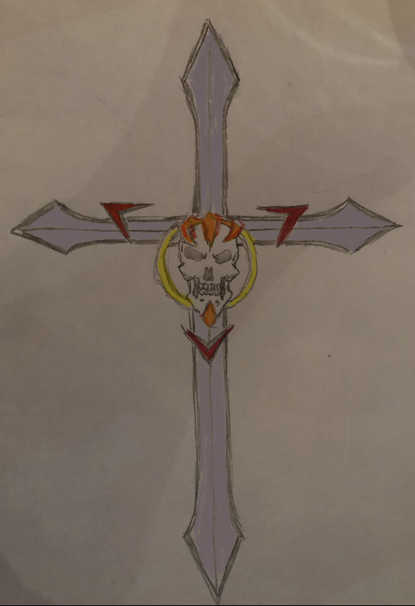

Paul Garay
About me
I have worked over 10 years in the IT field in desktop support, however I recently made a switch to web development and am attending classes at Code Immersives. I enjoy puzzles, taking things apart, reverse engineering and reassembling them. This is part of what drew me to IT in general, and to web development in particular. I like the diversity and creativity involved in web development and look forward to learning and creating throughout my time at Code Immersives and beyond.
Aside from puzzles, etc. mentioned above, I also enjoy:
- Riding my bike and walking around the city
- Drawing 
- Learning new things
- Cooking
- Spending time with my furry, four-legged child